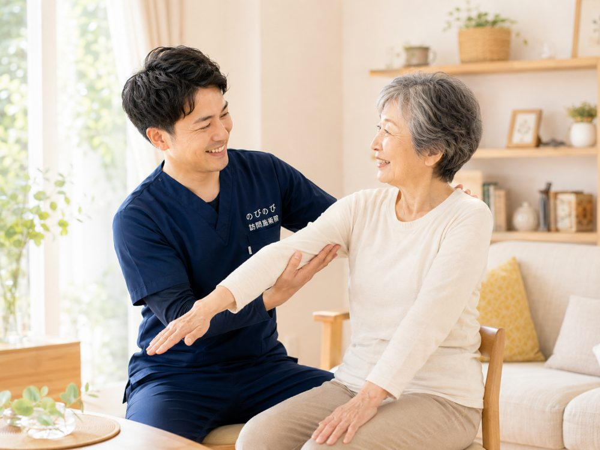

訪問鍼灸マッサージSERVICE
訪問鍼灸マッサージ
はり・きゅう・マッサージを、ご自宅や施設で
国家資格を持つ施術者がご自宅や施設へうかがい、お一人おひとりの状態に合わせて「はり・きゅう・マッサージ」を組み合わせた施術を行います。痛みや動かしづらさをやわらげ、その方らしい毎日を、身体のケアで支えます。
- お身体の状態に合わせた施術プランをご提案
- 寝たきり・車いすの方にも対応
施術内容
お身体の状態に合わせて、はり・きゅう・マッサージを行います。
のびのびは、はり・きゅうを施術のベースにしています。その日の体の状態を確認しながら鍼やお灸を行い、必要に応じて手技やストレッチ、無理のない範囲で身体を動かす運動なども組み合わせます。どの施術がどの療養費の対象になるかは、体の状態と医師の同意によって決まります。お問い合わせのときに、その方の場合をご説明します。
はり（鍼）
細い鍼で、こりや痛みに
やさしくアプローチ。
きゅう（灸）
心地よい温かさで、
血行を促し巡りを整えます。
マッサージ
手技でこわばりをほぐし、
動きをサポート。
3つの安心
国家資格者が施術
はり師・きゅう師・あん摩マッサージ指圧師など、国家資格を持つ施術者が担当します。
ご自宅・施設へ訪問
移動の負担なく、住み慣れた場所で施術を受けられます。施設での利用も可能です。
医療保険で安心の料金
医師の同意のもと医療保険が使え、1回395円〜の負担で施術が受けられます。費用を抑えて続けやすいのも安心です。
私たちが大切にしていること
痛む場所だけでなく、今日は眠れているか、立つときに何がこわいか、また行きたい場所はどこか。毎回の小さな変化を記録し、次の施術につなげます。
まず、その日の体調を確かめる
血圧・脈拍・SpO₂・体温を確認し、その日の状態を見極めてから施術を始めます。数値だけでなく、睡眠や食欲、痛み、疲れ、お薬のあとの変化まで、ていねいに伺います。
痛みだけでなく、生活の動作を見る
歩く、立つ、座る、車椅子へ移る、靴下を履く、買い物へ行く。日常で困っているその動作を、そのまま施術の目標にします。
小さくても、具体的な目標を持つ
「近くのコンビニまで歩きたい」「もう一度自分で移りたい」。目標がはっきりすると、毎回の施術で何を練習するかが見えてきます。
強さも姿勢も、一人ひとりに合わせる
強めが心地よい方、鍼の響きが苦手な方、座るのがつらい方。反応を確かめながら、力加減や鍼の深さ、体の向きを細かく調整します。
ご家族・施設・看護師とつなぐ
ご本人の変化を施術者だけで抱えません。ご家族や施設の職員さん、看護師、ケアマネジャーと共有し、安全で現実的な支援につなげます。
何気ない会話も、大切な情報
昔の仕事、家族、旅行、歌、好きな食べ物。ふとした会話から、意欲や不安、暮らしの変化が見えることがあります。毎回記録し、次の関わりに生かします。
こんなお悩みはありませんか？
訪問鍼灸マッサージは、日々のつらさや不安に寄り添います。
施術についてよくいただくご質問
はじめての方からいただくことの多いご質問をまとめました。
Qどんな施術をするのですか？
Aはり・きゅうを施術のベースにしています。その日の体の状態を確認しながら鍼やお灸を行い、必要に応じて手技やストレッチ、無理のない範囲で身体を動かす運動なども組み合わせます。どの施術がどの療養費の対象になるかは体の状態と医師の同意によって決まりますので、お問い合わせのときにご説明します。
Q鍼は痛くないですか？
A使うのは髪の毛ほどの細さの鍼で、はじめての方でも「思っていたより何も感じない」と言われることが多いものです。刺す深さや本数は体の状態とご希望に合わせて調整しますので、苦手な場合はお伝えください。鍼を使わず手技とお灸だけで進めることもできます。
Qお灸は熱くないですか？
A台座のついたお灸を使い、心地よいと感じる温かさで行います。熱さの感じ方は人によって違いますので、少しでも熱いと感じたらすぐにお伝えください。皮膚の弱い方には温める道具を変えることもあります。
Qどんな症状が対象になりますか？
Aはり・きゅうの療養費の対象として定められているのは、神経痛・リウマチ・頸肩腕症候群・五十肩・腰痛症・頸椎捻挫後遺症の6つです。ご相談が多いのは、脳梗塞のあとのこわばりや麻痺、膝や腰の痛み、手足のしびれ、パーキンソン病にともなう動かしにくさです。
Q1回どのくらいの時間ですか？
A20分から30分ほどが目安です。体の状態やその日の調子によって前後します。時間が長くかかった日も短く終えた日も、料金は同じです。
Q寝たきりでも、車いすでも受けられますか？
A受けられます。ベッドの上でも、車いすに座ったままでも施術します。姿勢を無理に変えることはしません。部屋を片づけていただく必要もなく、ふだん過ごしておられるままの場所でお受けいただけます。
Q着替える必要はありますか？
Aふだんの服装のままで結構です。袖や裾をまくらせていただく程度ですので、着替えの準備はいりません。
Qどのくらいの間隔で受けるものですか？
A週1回から2回で始める方が多いです。体の状態を見ながら間隔を調整します。同じ曜日・同じ時間での定期訪問をご希望になる方が多く、暮らしのリズムに組み込みやすい形にできます。
Q毎回同じ人が来ますか？
Aできるだけ同じ担当者が続けてうかがいます。前回との違いや小さな変化に気づきやすく、安心して受けていただけます。
Qいつ来てもらえますか？
A平日の9時から18時までです。土曜・日曜・祝日はお休みをいただいています。デイサービスに行っておられる方は、通所のない曜日に組むのが基本です。
Qご家族が立ち会えなくても大丈夫ですか？
A大丈夫です。ご本人おひとりのところへうかがう形で続けておられる方はたくさんいます。その日の様子は電話か報告書でお伝えします。初回だけ立ち会っていただけると、目標やご希望をうかがいやすくなります。
Qまず何から始めればいいですか？
Aお電話かお問い合わせフォームからご連絡ください。体の状態と通院の事情をうかがい、保険の対象になりそうかをご説明します。そのうえで無料体験を受けていただき、続けるかどうかを決めていただく流れです。
ここに載せきれない細かい疑問は、コラムにまとめています。料金や同意書、介護保険との関係はよくある疑問から探す、体の症状ごとの話は相談の多い症状から探すをご覧ください。